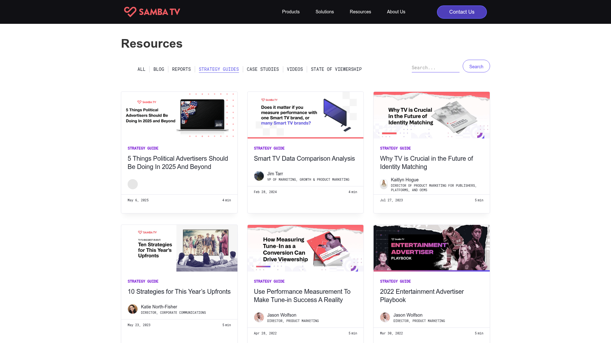
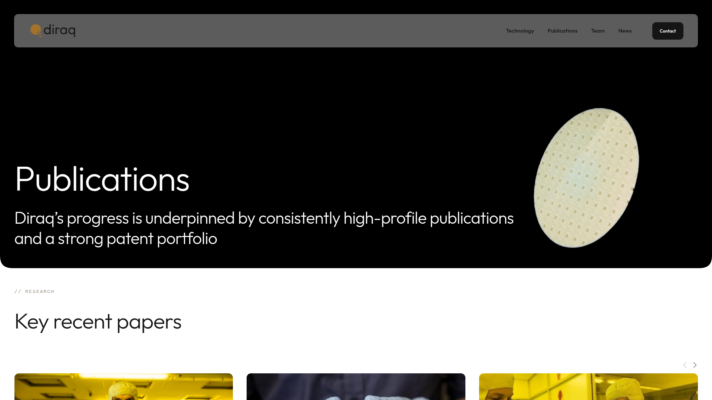
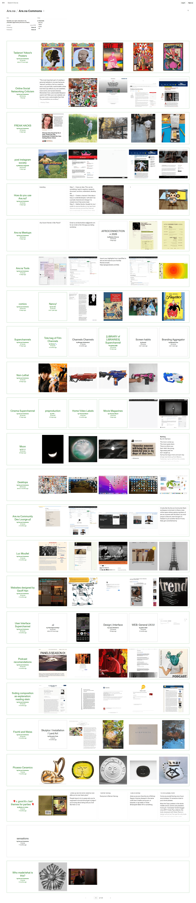
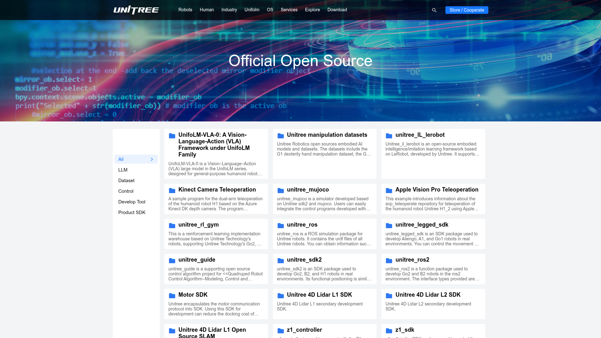

MAIR Lab Papers & Projects
推荐：优先选择“交替编辑特写”。它最贴合当前首页的黑白编辑风，也最适合同时展示论文图、摘要、venue 与代码链接。
| 方案 | 新颖度 | 可实施性 | 建议 |
|---|---|---|---|
| B. 交替编辑特写 | 高 | 高 | 首选 |
| A. 双标签卡片列表 | 中 | 高 | 稳妥备选 |
| D. 海报墙拼贴 | 高 | 中 | 视觉型备选 |
| C. 横向成果书架 | 高 | 中 | 内容多时使用 |
A. 双标签卡片列表

顶部切换 Publications / Open Source，下方使用统一图文卡片。结构清晰、维护简单，适合成果持续增长。
PUBLICATIONS | OPEN SOURCE [ I2E image ] [ TMPO image ] [ SciIR image ] title · venue · summary · Paper / Code
B. 交替编辑特写

论文图与文字左右交替，每个成果占一整行。最能延续当前宣言式首页的节奏与品牌感。
[ LARGE FIGURE ] I2E / title / abstract / links TMPO / text [ LARGE FIGURE ]
C. 横向成果书架

Papers 与 Projects 各占一条横向滚动书架，适合大量成果，且不会让首页过长。
PAPERS [ I2E ] [ TMPO ] [ SciIR ] → PROJECTS [ TMPO ] [ SciIR ] [ Demo ] →
D. 海报墙拼贴

一大两小的图片拼贴，以论文 figure 和 Demo 画面为主角，视觉最强，但需要高质量图片素材。
[ FEATURED I2E ] [ TMPO ]
[ SciIR ]
组合建议：首页使用 B 展示三项精选成果，再在下方追加 A 风格的紧凑 All Publications 列表。